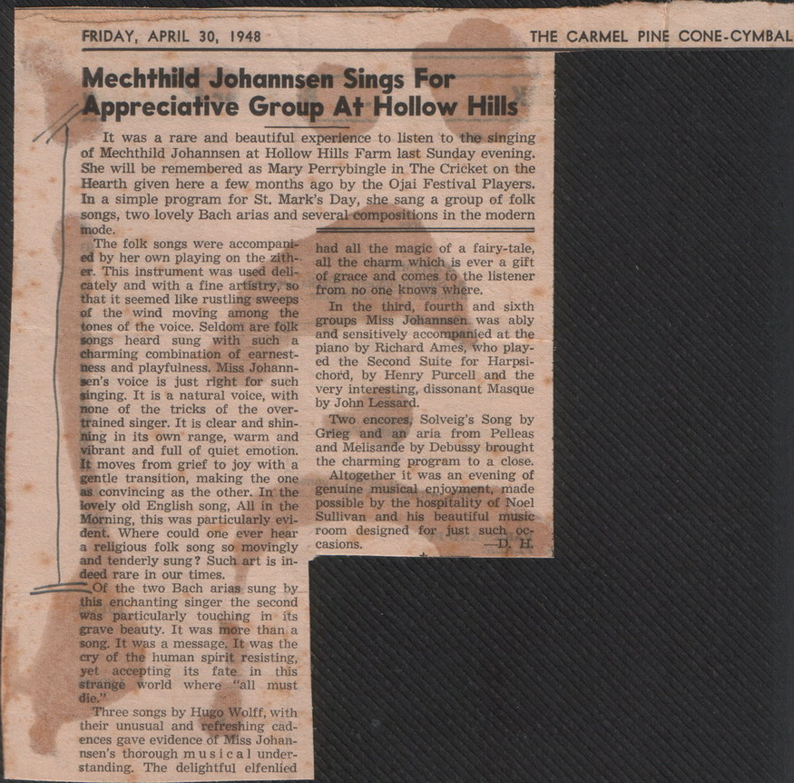
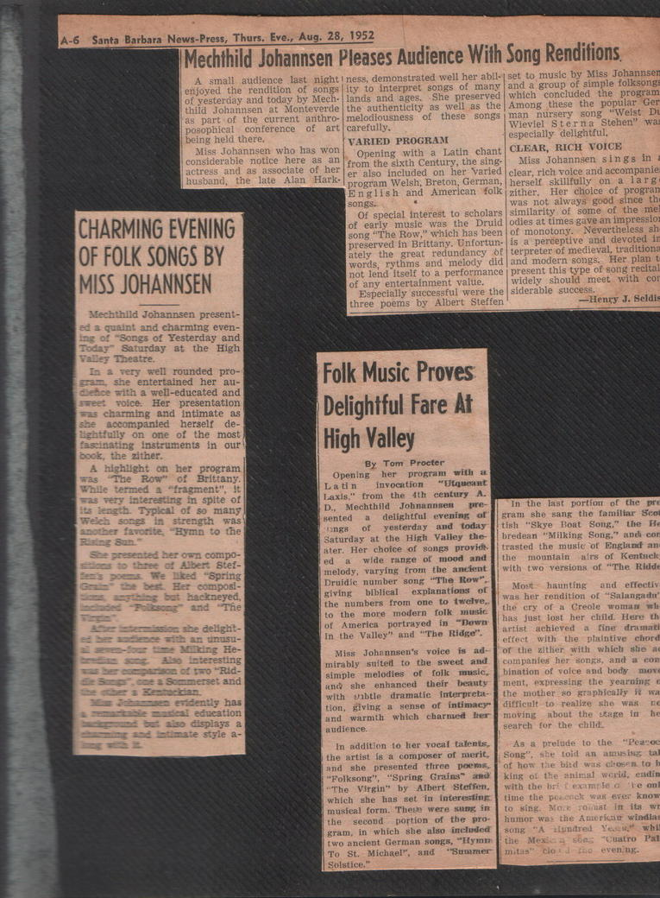

Mechthild Johannsen - Folk Songs

Read the clipping text (OCR)
FRIDAY, APRIL 30, 1948 Mechthild Johannsen Sings For Appreciative Group At Hollow Hills It was a rare and beautiful experience to listen to the singing of Mechthild Johannsen at Hollow Hills Farm last Sunday evening. She will be remembered as Mary Perrybingle in The Cricket on the Hearth given here a few months ago by the Ojai Festival Players. In a simple program for St. Mark’s Day, she sang a group of folk songs, two lovely Bach arias and several compositions in the modern mode. The folk songs were accompani- had all the magic of a fairy-tale, ed by her own playing on the zith-. all the charm which is ever a gift er. This instrument was used deli- of grace and comes to the listener cately and with a fine artistry, so from no one knows where. that it seemed like rustling sweeps of the wind moving among the In the third, fourth and sixth tones of the voice. Seldom are folk groups Miss Johannsen was ably songs heard sung with such a and sensitively accompanied at the charming combination of earnest- piano by Richard Ames, who play- ed the Second Suite for Harpsi- ness and playfulness. Miss Johann- sen’s voice is just right for such chord, by Henry Purcell and the singing. It is a natural voice, with very interesting, dissonant Masque by John Lessard. none of the tricks of the over- trained singer. It is clear and shin- Two encores, Solveig’s Song by ning in its own range, warm and Grieg and an aria from Pelleas vibrant and full of quiet emotion. and Melisande by Debussy brought It moves from grief to joy with a the charming program to a close. gentle transition, making the one Altogether it was an evening of as convincing as the other. In the genuine musical enjoyment, made lovely old English song, All in the possible by the hospitality of Noel Morning, this was particularly evi. Sullivan and his beautiful music dent. Where could one ever hear room designed for just such Oc- a religious folk song so movingly casions. D. H. and tenderly sung? Such art is in- deed rare in our times. — Of the two Bach arias sung by this enchanting singer the second was particularly touching in its grave beauty. It was more than a song. It was a message. It was the cry of the human spirit resisting, yet accepting its fate in this strange world where “all must die.” Three songs by Hugo Wolff, with their unusual and refreshing cad- ences gave evidence of Miss Johan- nsen’s thorough musical under- standing. The delightful elfenlied THE CAMEL PINE CONE-CYMBAL

Read the clipping text (OCR)
A-6 Santa Barbara News-Press, Thurs. Eve., Aug. 28, 1952 | Mechthild Johannsen Pleases Audience With Song Renditions. A small audience last night I ness, demonstrated well her abll- set to music by Miss Johannser enjoyed the rendition of songs ity to interpret songs of many and a group of simple folksong of yesterday and today by Mech- lands and ages. She preserved which concluded the program thild Johannsen at Monteverde the authenticity as well as the Among these the popular Ger as part of the current anthro- melodiousness of these songs man nursery song "Weist posophical conference of art carefully. Wieviel Sterna 'Stehen" especially dellghtful, being held there, VARIED PROGRAM Miss Johannsen who has won Opening with a Latin chant CLEAR, RICH VOICE considerable notice here as an considerand as associate of her from the sixth Century, the are Miss Johannsen sings in er also included on her varled clear, rich voice and accompanie husband, Hark: program Weish, Breton, German, herself skilfully on a farg English and Amerlean folk zither. Her choice of prograr songs. Of special interest to was not always good since th scholars similarity of some of the me of early music was the Druid odies at times gave an impressio song "The Row," which has been of monotony. Nevertheless sh preserved in Brittany. Unfortun: is a perceptive and devoted i1 ately the great redundancy of terpreter of medieval, traditions words, rythms and melody did and modern songs. Her plan not lend Itself to a performance present this type of song recita of any entertainment value. widely should meet with co Especially successful were the siderable success. three poems by Albert Steffen Henry J. Seldi CHARMING EVENING OF FOLK SONGS BY MISS JOHANNSEN Mechthild Johannsen present- ed a quaint and charming even- ing of Songs of Yesterday and Today" Saturday at the High Valley Theatre. In a very well rounded pro- gram, she entertained her au- Dehce with a well-educated and voice. Her presentation was charming and intimate as accompanied herself de- lightfully on one of the most fascinating Instruments in our the zither A highlight on her program was The Row" of Brittany. While termed a "fragment'. was very interesting in spite of Tpleal of so many in strength was "Hymn to the presented her own compo- We liked Spring composi- hackneyed, The she delight- with an unusu- milking He- Also Interesting mourisca of two "Rid- amerset and evidently has education displays a ate style Folk Music Proves Delightful Fare At High Valley By Tom Procter Opening her program with a La tin invocation *Utgucant Laxis." trom the 4th century D., Mechthild Johnannsen pre- sented a delightful evening Ing8 of yesterday and today Saturday at the High Valley the ater. Her choice of songs provid ed wide range of mood and melody, varying from the ancient Druidie number song "The Row". giving biblical explanations of the numbers from one to tweive, to the more modern folk music of America portrayed in "Down In the Valley" and The Ridge". Miss Johannsen's voice is ad- mirably suited to the sweet and simple melodies of folk music, and she enhanced their beauty with gabtle dramatic interprela- tion, giving a sense of intimacy" and warmth which charmed audience. In addition to her vocal talents, the artist is a composer of merit, and she presented three poems, "Folksong", "Spring Grains" and "The Virgin" by Albert Steffen. which she has set in interesting musieal form. These were sung in the second portion of the pro- gram, in which she also included two ancient German songs, "Hymm To St. Michael', Solstice." In the last portion of the erRI she sang the familiar Se [tish "Skye Bont Song." the bredean "Milking Song."* undi con trasted the musie of England an the mountain airs of Kentuch The Ridd Most haunting and effectiv was her rendition of "Salangadu the cry of a Creole woman has just lost her child. Here artist achieved a linerarma effect with the plaintive chor of the wither with which shie companies her songs, and a con bination of voice and body mov ment, expressing the yearamg the mother so graphically it difficult to realize she moving about the serge in seareh for the child. •As a prelude to the Song", she toid an amising of how the bid wis closen to king of the animal worid, endit with the britexample a 'le on time the poscack war ever know to wing. More roimat In its humor was the Amorico windia song "A stundred Yesh, wh the SEE ET